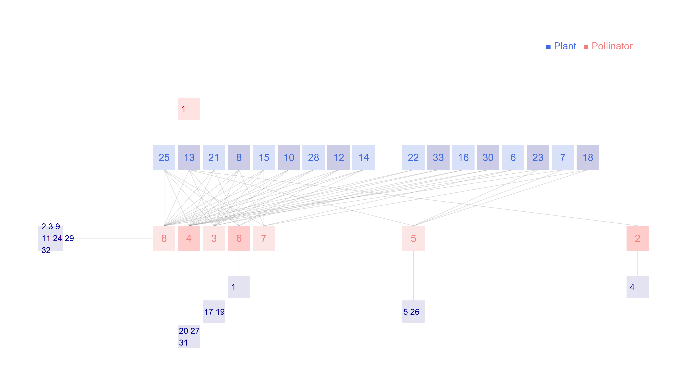

Network: Polidori_2025

Plant 1 Acanthus mollis, 2 Anchusella cretica, 3 Asphodelus microcarpus, 4 Bituminaria bituminosa, 5 Borago officinalis, 6 Calamintha nepeta, 7 Carduus pycnocephalus, 8 Carlina hispanica, 9 Cirsium creticum, 10 Crepis leontodontoides, 11 Echium plantagineum, 12 Fedia graciliflora, 13 Galactites tomentosa, 14 Hirschfeldia incana, 15 Hypericum hircinum, 16 Hypericum perforatum, 17 Isatis tinctoria, 18 Lamium flexuosum, 19 Malva silvestris, 20 Micromeria canescens, 21 Onopordum illyricum, 22 Papaver rhoeas, 23 Ranunculus bulbosus, 24 Robia peregrina, 25 Rubus ulmifolius, 26 Silene latifolia, 27 Sixalix atropurpurea, 28 Taraxacum officinale, 29 Thapsia garganica, 30 Trifolium incarnatum, 31 Trifolium pratense, 32 Verbascum pulverulentum, 33Vicia villosa
Pollinator
1 Bombus campestris, 2 Bombus hortorum, 3 Bombus lapidarius, 4 Bombus pascuorum, 5 Bombus pratorum, 6 Bombus ruderatus, 7 Bombus sylvarum, 8Bombus terrestris